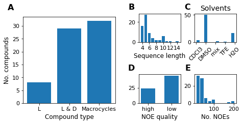

The MacroConf dataset
1. The MacroConf dataset#
df = pd.read_excel(
"../data/external/22-09-2021_MacroConf-v2.1/MacroConf-data.xlsx"
)
Note
The below figure is interactive. Hover over the molecule images to get more information about a specific molecule. Clicking on a molecule keeps this view open, e.g. to copy the paper reference. At the bottom (might have to scroll down slightly), the dataset can be sorted by different properties. To first see all natural cyclic peptides, one could sort by ‘is natural cyclic peptide’ in descending order.
